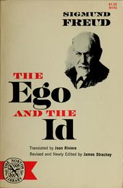

The Ego and the Id
Book·Sigmund Freud, 1923·自我与本我

Freud proposes the structural model of the id, ego and superego.
- Author
- Sigmund Freud
- Year
- 1923
- Difficulty
- Advanced
- Kind
- Primary text
- Schools
- Classical Psychoanalysis
- Core theories
- Structural Model: Id, Ego, Superego
Editions
- Chinese edition 《自我与本我》 [奥] 西格蒙德·弗洛伊德 · tr. 徐说 · 海南出版社 · 2023 Douban 8.3 (163 ratings) Douban page ↗
- English edition The Ego and the Id Sigmund Freud (trans. James Strachey) · W. W. Norton · 1962 Open Library ↗